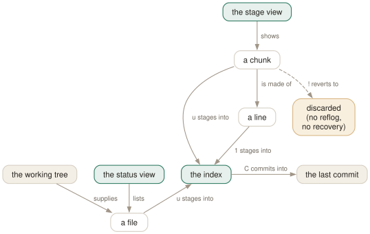

Day 06
Staging from the diff
Stage the file, the chunk, the part, or the single line you actually meant.
By the end of today you can
- stage and unstage whole files, single chunks and single lines without leaving tig
- say what the status view and the stage view each are, and why u means two things
- recover from a mis-stage, and recognise the one that git cannot undo for you
This is the reason to install tig
Everything so far has been a better way to read. This is the day tig replaces something: git add -p, and the whole business of answering y/n/s/e? at a prompt while trying to remember what chunk 4 of 9 contained. In tig you can see the whole diff, put the cursor on what you want, and press one key.
Two views do the work, and they nest:
- s the status view
- One line per file, grouped into staged, unstaged and untracked. This is
git status, navigable. - Enter the stage view
- The diff for the file under the cursor, which is where chunk and line staging happen.

status-update, bound to one key. What it moves is decided by what the cursor is pointing at — a file in the status view, a chunk or a line in the stage view. The amber box is the one-way door: status-revert sends a change somewhere nothing can retrieve it from.The status view, and the hint line you should read
Open it with tig status, or press s from anywhere:
On branch master
Changes to be committed:
M README
Changes not staged for commit:
M src/main.c
Untracked files:
? notes.txt
The status window at the bottom is doing something unusually helpful here: it tells you what u will do to the line you are currently on. Move the cursor and it changes — “Press u to stage”, “Press u to unstage”, “Press u to add”. When you are unsure, read it instead of guessing.
Untracked files appear because status-show-untracked-files defaults to yes, and whole untracked directories are expanded because of status-show-untracked-dirs. Pressing u on an untracked file adds it, exactly like git add.
Four granularities, one key
Press Enter on a modified file and the stage view opens below it. Now the cursor position means something, and u means progressively smaller things:
- The file. Cursor in the status view, on the filename. u stages all of it.
- The chunk. Cursor in the stage view, on a line inside a chunk. u stages that chunk only.
- Part of a chunk. 2 (
stage-update-part) stages from the cursor to the end of the chunk — for when a chunk is nearly right. - One line. 1 (
stage-update-line) stages exactly the line under the cursor.
And when a chunk is stubbornly two changes glued together by three lines of context, \ (stage-split-chunk) splits it so you can take half. That, plus [ to shrink the context, handles nearly every awkward case.
What line staging really does to the index
This one is worth doing rather than believing. Take a file where one line changed from one to ONE. The diff is a pair:
@@ -1,8 +1,8 @@
-one
+ONE
two
Put the cursor on +ONE, press 1, and look at what you staged:
$ git diff --cached
@@ -1,4 +1,5 @@
one
+ONE
two
Undoing, and the one thing you cannot undo
- u again
- Unstages. Entirely safe — the change is still in your working tree.
- !
- Reverts: throws the change away. Prompts first, and is not recoverable.
- M
- Hands an unmerged file to
git mergetool, which needs configuring first. - C
- Runs
git commitin the foreground, editor and all.
! is the only genuinely dangerous key in this course. An uncommitted change has never been written to the object database, so there is no reflog entry, no dangling blob, nothing for git fsck to find. The confirmation prompt is the entire safety mechanism.
Today's habit
Stage your next commit entirely from tig. Open tig status, press Enter on each modified file, stage the chunks that belong together, press C, write the message. Then do the second commit with what is left.
That is the end of the essentials. You can now read history, read diffs, find things and build commits without leaving tig. Tomorrow the course turns around and starts making tig yours.
New vocabulary
Keys
| Key | Does |
|---|---|
| u | Stage or unstage: the file in the status view, the chunk in the stage view. |
| 1 | Stage or unstage the single line under the cursor. |
| 2 | Stage or unstage part of a chunk: from here to the end of it. |
| \ | Split the current chunk into smaller chunks. |
| ! | Revert: throw away the chunk or file under the cursor. Prompts first. |
| M | Resolve an unmerged file with git mergetool. |
| C | Commit. Runs git commit in the foreground, in the status view. |
Options
| Option | Does |
|---|---|
status-show-untracked-files | Show untracked files. Default yes. |
status-show-untracked-dirs | Show the contents of untracked directories. Default yes. |
Drillsdo these in a real terminal, today
Self-check
Answer out loud first, then unfold.
You press u and sometimes a whole file is staged, sometimes a single chunk. What decides?
Which view you are in. u is bound to the same action, status-update, in both the status and stage keymaps, and the action asks what the cursor is on.
In the status view the cursor is on a file, so the file is staged. In the stage view the cursor is inside a diff: on a chunk line it stages that chunk, and anywhere else it stages everything in the displayed diff. One key, three granularities, chosen by where you are pointing.
You stage a single + line with 1 and the staged version of the file now has both the old line and the new one. Is that wrong?
No, and it is the thing to understand about line staging. A modification is a deletion plus an insertion. Staging only the + line stages the insertion and leaves the - line unstaged, so the index holds both.
Verified on 2.6.1: staging +ONE out of a -one / +ONE pair produces an index containing both lines. That intermediate state often does not compile, which is exactly why you should stage the - line too — or use 2 for a run of lines rather than picking them one at a time.
Chunk staging suddenly fails with an error about the patch not applying, on a file you have been editing normally. What is the most likely cause?
You have ignore-space turned on — probably by pressing W in the diff view yesterday. tigrc(5) warns about this directly: with whitespace ignored, the chunk tig shows you is not the chunk git has, so status-update and status-revert can fail to apply.
Press W to turn it back off and try again. It is a good reason to keep whitespace-blindness as a deliberate, temporary reading aid rather than something you set permanently in ~/.tigrc.
Which key in this lesson can lose work that no git command will bring back?
! — status-revert. Unstaging with u is harmless, and a commit made with C is recoverable through the reflog even if you immediately reset it. ! throws away an uncommitted change, and uncommitted changes have never been in the object database, so there is nothing to recover.
tig does prompt first, which is why the binding is ?git-style in spirit. Read that prompt. It is the only safety net between you and an afternoon's work.
Cheat sheet
Staging, by granularity. The cursor decides what u means.
s status view: one line per file
Enter stage view: that file's diff
u stage/unstage — the FILE (status) or the CHUNK (stage)
2 stage from the cursor to the end of the chunk
1 stage exactly this line (see the warning below)
\ split this chunk into smaller ones
@ jump to the next chunk [ ] narrow/widen context
C commit (runs 'git commit' in the foreground)
! REVERT — destroys the change, no reflog, no recovery
# staging only a '+' line leaves the '-' line unstaged: the index gets BOTH
Everything through Day 06
Keys
| Key | Does |
|---|---|
| m | Open the main view — the one-line-per-commit list. |
| d | Open the diff view for the selected commit. |
| s | Open the status view: the working tree. S does the same. |
| h | Open the help view: every binding that is live right now. |
| q | Close this view and fall back to the one underneath. Quits if it is the last. |
| Q | Quit immediately, however deep the stack. |
| R | Reload the current view by re-running its git command. |
| v | Show the version — and prove which build you are on. |
| z | Stop all background loading. For when you opened a 200,000-commit history. |
| D | Cycle the date column: default, relative, compact, custom, hidden. |
| A | Cycle the author column: full, abbreviated, email, user, hidden. |
| X | Show or hide the abbreviated commit ID column. |
| G | Cycle the graph in the main view: v2, v1, off. |
| F | In the main view, show or hide the ref labels. |
| # | Show or hide line numbers. |
| ~ | Switch the line graphics between ASCII and the drawing characters. |
| o | Open the option menu: the same toggles, with their current values. |
| jk | Move the cursor down and up. Arrow keys work too, with a caveat on Day 3. |
| Enter | Open the selected line. From the main view, splits and shows the diff. |
| Tab | Move focus to the other view in a split. |
| UpDown | Move to the previous/next entry — in the parent view, even from the child. |
| JK | Same as the arrow keys: next and previous entry. |
| O | Maximise the focused view to fill the display. |
| < | Go back to the previous view state. |
| , | Move to the parent: the parent directory, or the parent commit. |
| Space- | Page down and page up. |
| C-dC-u | Half a page down and up. |
| ] | Increase the diff context by one line. |
| [ | Decrease the diff context by one line. |
| @ | Jump to the next chunk header. Implemented as a search — see today's gotcha. |
| % | Toggle the file filter: show the whole commit, not just the file you came from. |
| W | Toggle whitespace-insensitive diffing. |
| $ | Highlight commit-title text past the conventional width. |
| / | Search forwards. Prompts for a regexp. |
| ? | Search backwards. |
| n | Next match. N for the previous one. |
| : | Open the prompt. |
| H | Jump to the HEAD commit, in the main view. |
| u | Stage or unstage: the file in the status view, the chunk in the stage view. |
| 1 | Stage or unstage the single line under the cursor. |
| 2 | Stage or unstage part of a chunk: from here to the end of it. |
| \ | Split the current chunk into smaller chunks. |
| ! | Revert: throw away the chunk or file under the cursor. Prompts first. |
| M | Resolve an unmerged file with git mergetool. |
| C | Commit. Runs git commit in the foreground, in the status view. |
Commands
| Command | Does |
|---|---|
tig | Open the main view for the current branch. |
tig status | Start in the status view instead. |
tig -C <path> | Run as if started in path. |
tig -v | Print the version and exit. Also reveals the optional features built in. |
tig show <rev> | Open a commit directly in the diff view. |
tig --word-diff=plain | Word-level rather than line-level diffing. |
:42 | Jump to line 42 of this view. |
:2f12bcc | Jump to that commit. |
:goto <rev> | Jump to a revision: a branch, a tag, HEAD~3, %(commit)^2. |
:!git <cmd> | Run a git command and show the output in the pager view. |
:edit | Run an action by name. Any action name works here. |
:q | Run the binding for a key. Same as pressing q. |
:echo <text> | Print a line in the status window. |
:save-display <file> | Write the current screen to a file. |
Options
| Option | Does |
|---|---|
show-changes | Whether the working-tree rows appear at all. Default yes. |
show-untracked | Whether the untracked row appears. Default yes. |
reference-format | How refs are wrapped. Default [branch] {remote} <tag> ~replace~. |
split-view-height | Height of the bottom view in a stacked split. Default 67%. |
split-view-width | Width of the right-hand view in a side-by-side split. Default 50%. |
vertical-split | Stacked or side by side. Default auto. |
focus-child | Whether opening a child view moves the focus into it. Default yes. |
diff-context | Context lines around each change. Default 3. |
diff-options | Extra options for the diff view's git show. |
ignore-space | Whitespace handling: no (default), all, some, at-eol. |
diff-highlight | Run git's diff-highlight to mark intra-line changes. Off by default. |
diff-indicator | Show the leading +/- signs. Default yes. |
ignore-case | Search case handling: no (default), yes, smart-case. |
wrap-search | Wrap around the ends of the view. Default yes. |
history-size | Lines kept in ~/.tig_history. Default 500, 0 disables. |
status-show-untracked-files | Show untracked files. Default yes. |
status-show-untracked-dirs | Show the contents of untracked directories. Default yes. |